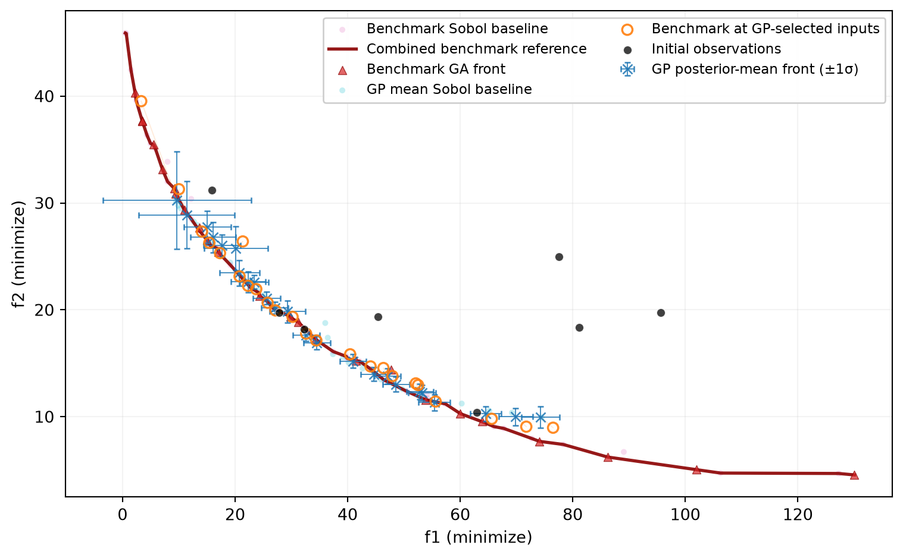

import os
import matplotlib.pyplot as plt
import numpy as np
import pandas as pd
import bofire.strategies.api as strategies
from bofire.benchmarks.api import BNH, Benchmark
from bofire.data_models.enum import SamplingMethodEnum
from bofire.data_models.strategies.api import (
GeneticAlgorithmOptimizer,
MoboStrategy,
RandomStrategy,
)
from bofire.strategies.utils import run_ga
from bofire.utils.multiobjective import compute_hypervolume, get_pareto_front
SMOKE_TEST = os.environ.get("SMOKE_TEST")
SEED = 42
NUM_INIT_SAMPLES = 12 if not SMOKE_TEST else 8
NUM_FRONT_SAMPLES = 8192 if not SMOKE_TEST else 120
GA_POPULATION_SIZE = 128 if not SMOKE_TEST else 24
GA_MAX_GENERATIONS = 150 if not SMOKE_TEST else 5
OBJECTIVE_KEYS = ["f1", "f2"]
HYPERVOLUME_REFERENCE_POINT = {"f1": 138, "f2": 52}
np.random.seed(SEED)Estimating a Pareto Front from Surrogate Models
What this tutorial shows
After fitting a multi-objective surrogate model, we often want to inspect the Pareto front that the model currently believes is optimal. This tutorial uses the BNH benchmark to separate several quantities:
- transparent Sobol-sampling baselines for the benchmark and the models,
- a benchmark front found by a genetic algorithm (GA),
- the posterior-mean front found by applying the same GA to fitted Gaussian process (GP) models, and
- the actual benchmark values at the inputs selected by the GP-based GA.
The comparison diagnoses whether the models are accurate around their believed Pareto set and whether that set is located in the correct part of the input space. In a real application only the GP front is available; benchmark evaluations are used here solely for validation.
We use the unconstrained BNH problem so that the example focuses on Pareto-front estimation. Predicted output constraints require additional treatment and should not simply be ignored when estimating a constrained front.
Imports and settings
Generate the training data
The benchmark represents the unknown experimental system. We draw a small initial design and evaluate it to obtain the only data used to fit the GPs. There are no Bayesian-optimization iterations in this tutorial.
def sample_inputs(
benchmark: Benchmark,
n_samples: int,
method: SamplingMethodEnum = SamplingMethodEnum.UNIFORM,
) -> pd.DataFrame:
data_model = RandomStrategy(
domain=benchmark.domain,
seed=SEED,
fallback_sampling_method=method,
)
sampler = strategies.map(data_model=data_model)
return sampler.ask(n_samples)
bnh = BNH(constraints=False)
initial_inputs = sample_inputs(bnh, n_samples=NUM_INIT_SAMPLES)
initial_data = bnh.f(initial_inputs, return_complete=True)
initial_data.head()| x1 | x2 | f1 | f2 | valid_f1 | valid_f2 | |
|---|---|---|---|---|---|---|
| 0 | 1.725368 | 1.997739 | 27.871414 | 19.736790 | 1 | 1 |
| 1 | 3.236423 | 2.295931 | 62.982940 | 10.422191 | 1 | 1 |
| 2 | 0.307998 | 1.969395 | 15.893524 | 31.199450 | 1 | 1 |
| 3 | 2.238638 | 1.749513 | 32.289183 | 18.190787 | 1 | 1 |
| 4 | 4.404138 | 0.037208 | 77.591264 | 24.984361 | 1 | 1 |
Fit the MOBO surrogate models
MoboStrategy.tell fits one surrogate model per output. The strategy’s predict method then exposes the GP posterior means and standard deviations.
data_model = MoboStrategy(domain=bnh.domain, seed=SEED)
mobo_strategy = strategies.map(data_model=data_model)
mobo_strategy.tell(initial_data)/opt/hostedtoolcache/Python/3.12.14/x64/lib/python3.12/site-packages/bofire/surrogates/botorch.py:185: UserWarning: The given NumPy array is not writable, and PyTorch does not support non-writable tensors. This means writing to this tensor will result in undefined behavior. You may want to copy the array to protect its data or make it writable before converting it to a tensor. This type of warning will be suppressed for the rest of this program. (Triggered internally at /__w/pytorch/pytorch/torch/csrc/utils/tensor_numpy.cpp:213.)
torch.from_numpy(Y.values).to(**tkwargs),Keep the simple sampling baseline
Before doing anything fancy, let’s keep the simple approach from the original notebook. We draw a bunch of inputs, evaluate them, and keep the ones that are not dominated. That’s it.
We use Sobol samples here instead of independent uniform samples because they spread out a little more evenly, but the basic idea is still the same. For BNH, which has only two inputs, this works surprisingly well and gives us a nice baseline for the GA.
The approach becomes less fun in higher dimensions: we are basically hoping to get lucky and place enough samples near the Pareto set. That is where the GA starts to earn its keep.
This tutorial is a showcase rather than a competitive benchmark of Sobol sampling versus the GA. However, as the input dimension grows, space-filling samples become sparse, whereas the GA can concentrate later evaluations around promising trade-offs; it is therefore expected to scale more favorably for front estimation.
def gp_mean_experiments(candidates: pd.DataFrame) -> pd.DataFrame:
candidates = candidates.reset_index(drop=True)
predictions = mobo_strategy.predict(candidates)
experiments = candidates.copy()
for key in OBJECTIVE_KEYS:
experiments[key] = predictions[f"{key}_pred"].to_numpy()
experiments[f"valid_{key}"] = 1
return experiments
sobol_inputs = sample_inputs(
bnh,
n_samples=NUM_FRONT_SAMPLES,
method=SamplingMethodEnum.SOBOL,
)
sobol_benchmark_front = get_pareto_front(
domain=bnh.domain,
experiments=bnh.f(sobol_inputs, return_complete=True),
)
sobol_gp_mean_front = get_pareto_front(
domain=bnh.domain,
experiments=gp_mean_experiments(sobol_inputs),
)Define the two GA objective functions
run_ga can optimize any callable over a BoFire domain. For a multi-objective run, a callable may return one column per objective. The two functions below have the same inputs and optimization direction; only the evaluated response changes:
benchmark_objectivesevaluates the known benchmark functions,gp_mean_objectivesevaluates the fitted GP posterior means.
Why optimization_direction="min" when the domain already defines objectives? The GA does not read the BoFire domain’s objective directions. Instead, it treats the returned objective vectors as raw values to be optimized in a single uniform sense (all minimized or all maximized). If your problem mixes minimization and maximization objectives, you must flip or transform the relevant columns inside your objective callable so that the returned array has a consistent optimization sense matching optimization_direction.
def stack_individuals(individuals: list[pd.DataFrame]) -> pd.DataFrame:
"""Combine pymoo's one-dataframe-per-individual representation."""
return pd.concat(individuals, ignore_index=True)
def benchmark_objectives(individuals: list[pd.DataFrame]) -> np.ndarray:
candidates = stack_individuals(individuals)
return bnh.f(candidates)[OBJECTIVE_KEYS].to_numpy()
def gp_mean_objectives(individuals: list[pd.DataFrame]) -> np.ndarray:
candidates = stack_individuals(individuals)
predictions = mobo_strategy.predict(candidates)
prediction_keys = [f"{key}_pred" for key in OBJECTIVE_KEYS]
return predictions[prediction_keys].to_numpy()Find a benchmark front with the GA
The first GA run evaluates the benchmark directly. Its result is a numerical approximation, not an exact analytical front: a GA can still have residual search error. We form the numerical reference used below from the nondominated union of the Sobol and GA results. In an application with a known analytical front, prefer that as the reference.
ga = GeneticAlgorithmOptimizer(
population_size=GA_POPULATION_SIZE,
n_max_gen=GA_MAX_GENERATIONS,
n_max_evals=NUM_FRONT_SAMPLES,
verbose=False,
)
np.random.seed(SEED)
benchmark_solutions, _ = run_ga(
data_model=ga,
domain=bnh.domain,
objective_callables=[benchmark_objectives],
q=1,
callable_format="pandas",
n_obj=len(OBJECTIVE_KEYS),
optimization_direction="min",
)
benchmark_inputs = stack_individuals(benchmark_solutions)
benchmark_ga_front = get_pareto_front(
domain=bnh.domain,
experiments=bnh.f(benchmark_inputs, return_complete=True),
)
benchmark_reference_front = get_pareto_front(
domain=bnh.domain,
experiments=pd.concat(
[sobol_benchmark_front, benchmark_ga_front],
ignore_index=True,
),
)Find the GP posterior-mean front
The second run uses exactly the same GA configuration, but optimizes the GP posterior means. This removes random input coverage as a confounding factor when comparing the two fronts.
The GP posterior is a distribution over functions, so it does not define one unique deterministic front. Optimizing the posterior mean provides a useful plug-in estimate of the front that the model currently believes is best.
np.random.seed(SEED)
gp_solutions, _ = run_ga(
data_model=ga,
domain=bnh.domain,
objective_callables=[gp_mean_objectives],
q=1,
callable_format="pandas",
n_obj=len(OBJECTIVE_KEYS),
optimization_direction="min",
)
gp_inputs = stack_individuals(gp_solutions)
gp_mean_front = get_pareto_front(
domain=bnh.domain,
experiments=gp_mean_experiments(gp_inputs),
)
gp_inputs = gp_mean_front[bnh.domain.inputs.get_keys()]
# Posterior SDs at the GP-selected Pareto inputs
gp_front_predictions = mobo_strategy.predict(gp_inputs)
gp_front_sd = {
key: gp_front_predictions[f"{key}_sd"].to_numpy()
for key in OBJECTIVE_KEYS
}Evaluate the GP-selected inputs on the benchmark
In a benchmark study we can evaluate the inputs selected by the GP-based GA on the actual functions. Comparing the predictions and evaluations at identical inputs isolates surrogate-model error around the model’s believed Pareto set.
gp_inputs_on_benchmark = bnh.f(gp_inputs, return_complete=True)
prediction_errors = pd.DataFrame(
{
key: (
gp_mean_front[key].to_numpy()
- gp_inputs_on_benchmark[key].to_numpy()
)
for key in OBJECTIVE_KEYS
}
)
prediction_errors.abs().agg(["mean", "max"])| f1 | f2 | |
|---|---|---|
| mean | 0.916998 | 0.987501 |
| max | 6.374181 | 9.263043 |
The hypervolume summary compares search quality within each response source. Benchmark and GP hypervolumes should not be compared directly because one uses actual responses and the other uses model predictions.
Over the BNH input domain, the largest attainable values are 136 for f1 and 50 for f2. Because both objectives are minimized, larger values are worse. We therefore choose a reference point two units beyond those values: (138, 52). The same fixed reference point is used for every front.
front_summary = pd.DataFrame(
[
{
"front": "Benchmark — Sobol",
"points": len(sobol_benchmark_front),
"hypervolume": compute_hypervolume(
bnh.domain,
sobol_benchmark_front,
ref_point=HYPERVOLUME_REFERENCE_POINT,
),
},
{
"front": "Benchmark — GA",
"points": len(benchmark_ga_front),
"hypervolume": compute_hypervolume(
bnh.domain,
benchmark_ga_front,
ref_point=HYPERVOLUME_REFERENCE_POINT,
),
},
{
"front": "Benchmark — combined reference",
"points": len(benchmark_reference_front),
"hypervolume": compute_hypervolume(
bnh.domain,
benchmark_reference_front,
ref_point=HYPERVOLUME_REFERENCE_POINT,
),
},
{
"front": "GP mean — Sobol",
"points": len(sobol_gp_mean_front),
"hypervolume": compute_hypervolume(
bnh.domain,
sobol_gp_mean_front,
ref_point=HYPERVOLUME_REFERENCE_POINT,
),
},
{
"front": "GP mean — GA",
"points": len(gp_mean_front),
"hypervolume": compute_hypervolume(
bnh.domain,
gp_mean_front,
ref_point=HYPERVOLUME_REFERENCE_POINT,
),
},
]
)
front_summary| front | points | hypervolume | |
|---|---|---|---|
| 0 | Benchmark — Sobol | 37 | 5336.137436 |
| 1 | Benchmark — GA | 24 | 5310.539117 |
| 2 | Benchmark — combined reference | 54 | 5380.785005 |
| 3 | GP mean — Sobol | 28 | 4943.085884 |
| 4 | GP mean — GA | 24 | 4933.900753 |
Compare the fronts
The plotted quantities answer different questions:
- The Sobol fronts preserve the simple sampling estimator and provide a baseline for the GA search.
- The combined benchmark reference is the nondominated union of both numerical searches and approximates the best available trade-offs.
- The GP mean front shows what the fitted models predict at their selected inputs, with ±1σ error bars from the GP posterior. Large error bars indicate the model is uncertain about its believed front.
- The benchmark values at those same inputs show whether the GP predictions and selected Pareto set are reliable.
benchmark_reference_front = benchmark_reference_front.sort_values("f1")
benchmark_ga_front = benchmark_ga_front.sort_values("f1")
fig, ax = plt.subplots(figsize=(8, 5))
ax.scatter(
sobol_benchmark_front.f1,
sobol_benchmark_front.f2,
s=14,
alpha=0.25,
color="tab:pink",
edgecolors="none",
zorder=1,
label="Benchmark Sobol baseline",
)
ax.plot(
benchmark_reference_front.f1,
benchmark_reference_front.f2,
"-",
linewidth=2,
alpha=0.9,
color="darkred",
zorder=2,
label="Combined benchmark reference",
)
ax.scatter(
benchmark_ga_front.f1,
benchmark_ga_front.f2,
s=28,
marker="^",
color="tab:red",
alpha=0.7,
edgecolors="darkred",
linewidths=0.5,
zorder=3,
label="Benchmark GA front",
)
ax.scatter(
sobol_gp_mean_front.f1,
sobol_gp_mean_front.f2,
s=14,
alpha=0.25,
color="tab:cyan",
edgecolors="none",
zorder=1,
label="GP mean Sobol baseline",
)
ax.errorbar(
gp_mean_front.f1,
gp_mean_front.f2,
xerr=gp_front_sd["f1"],
yerr=gp_front_sd["f2"],
fmt="x",
markersize=6,
color="tab:blue",
ecolor="tab:blue",
elinewidth=0.7,
alpha=0.85,
capsize=2,
zorder=4,
label="GP posterior-mean front (±1σ)",
)
for prediction, evaluation in zip(
gp_mean_front[["f1", "f2"]].to_numpy(),
gp_inputs_on_benchmark[["f1", "f2"]].to_numpy(),
):
ax.plot(
[prediction[0], evaluation[0]],
[prediction[1], evaluation[1]],
color="tab:orange",
alpha=0.15,
linewidth=0.7,
zorder=2,
)
ax.scatter(
gp_inputs_on_benchmark.f1,
gp_inputs_on_benchmark.f2,
s=42,
facecolors="none",
edgecolors="tab:orange",
alpha=0.9,
linewidths=1.3,
zorder=5,
label="Benchmark at GP-selected inputs",
)
ax.scatter(
initial_data.f1,
initial_data.f2,
s=28,
color="black",
alpha=0.75,
edgecolors="white",
linewidths=0.4,
zorder=6,
label="Initial observations",
)
ax.set_xlabel("f1 (minimize)")
ax.set_ylabel("f2 (minimize)")
ax.grid(alpha=0.15)
ax.legend(framealpha=0.95, fontsize=8.5, ncol=2)
fig.tight_layout()
plt.show()
If the GP front and the benchmark evaluations at the GP-selected inputs are far apart, the models are inaccurate around their believed front. If those two agree but remain far from the reference front, the models are locally accurate but have not discovered the correct Pareto region. Agreement among all three indicates a good understanding of the trade-off region, but not necessarily of the entire input domain.